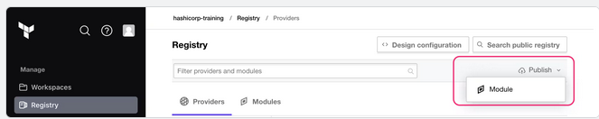

Terraform Cloud allows users to create and confidentially share infrastructure modules within an organization using the private registry.
With Terraform Enterprise, the private registry allows you to share modules within or across organizations
P.S.: The registry uses tags to identify module versions. Release tag names must be a semantic version, which can optionally be prefixed with a v . For example, v1. 0.4 and 0.9.

terraform {
required_providers {
aws = {
source = "hashicorp/aws"
version = "~> 4.0.0"
}
}
}
provider "aws" {
region = var.region
}
module "s3-webapp" {
source = "app.terraform.io/[ORGANIZATION_NAME]/s3-webapp/aws"
name = var.name
region = var.region
prefix = var.prefix
version = "1.0.0"
}
Add public provider to private registry
Curating public modules and providers in your private registry lets you define a list of approved components for your organization to use. It also lets your team find all documentation related to those components in one place, and makes it easier to track new releases and changes.
Use Configuration to Move Resources
When you move existing resources from a parent to a child module, your Terraform resource IDs will change. Because of this, you must let Terraform know that you intend to move resources rather than replace them, or Terraform will destroy and recreate your resources with the new ID
The moved configuration block lets you track your resource moves in the configuration itself. With the moved configuration block, you can plan, preview, and validate resource moves, enabling you to safely refactor your configuration.
moved {
from = aws_instance.example
to = module.ec2_instance.aws_instance.example
}
You can also use the moved configuration block to rename existing resources
Removing a moved block is a generally breaking change because any configurations that refer to the old address will plan to delete that existing object instead of move it. We strongly recommend that you retain all historical moved blocks from earlier versions of your modules to preserve the upgrade path for users of any previous version.
If you do decide to remove moved blocks, proceed with caution. It can be safe to remove moved blocks when you are maintaining private modules within an organization and you are certain that all users have successfully run terraform apply with your new module version.
Create and Use No-Code Modules
No-code provisioning lets users deploy infrastructure in modules without writing any Terraform configuration, which makes your standards even easier to comply with, and removes the dependency on infrastructure teams or ticketing systems to give developers their required resources.
The main difference between no-code modules and ordinary modules is that the no-code workflow requires declaring provider configuration within the module itself. Authors of standard modules usually avoid including the provider configuration within the module because it makes the module incompatible with the for_each, count, and depends_on meta-arguments. Since users will not reference no-code modules in written configuration, there is no risk of this conflict.
When users provision infrastructure with a no-code module, Terraform Cloud will automatically launch a new workspace to manage the module's resources. Because no-code modules contain their provider configuration, organization administrators must also enable automatic access to provider credentials